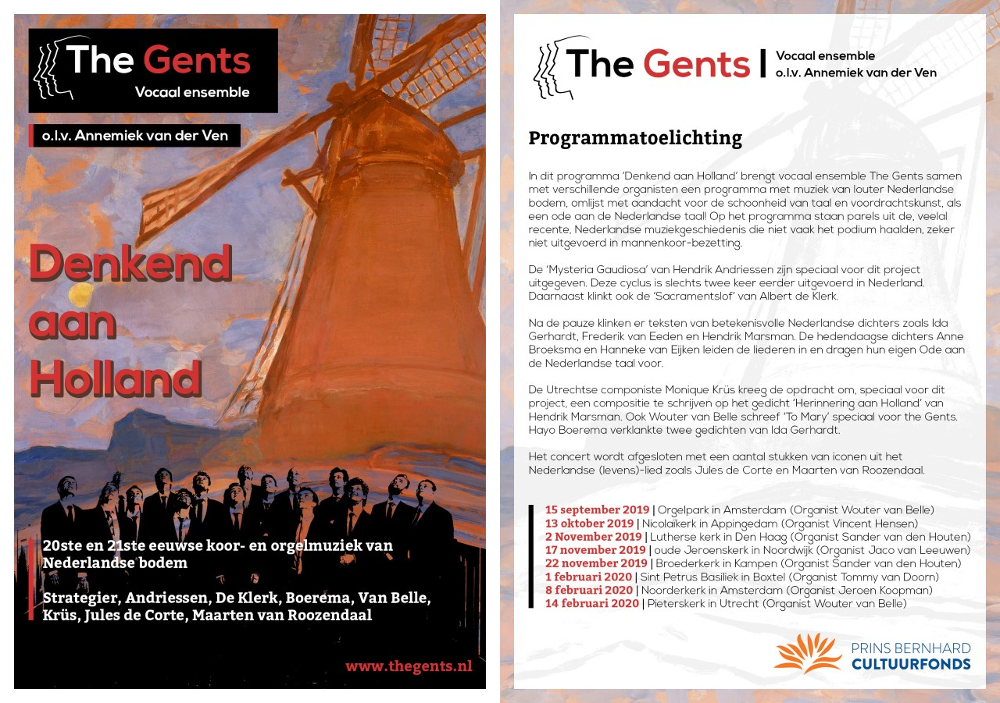

Archief
Denkend aan Holland
In ‘Denkend aan Holland’ brengt vocaal ensemble The Gents een programma met louter muziek van Nederlandse bodem. In samenwerking met verschillende organisten en dichters brengen we in muziek en voordrachtskunst een ode aan de schoonheid van de Nederlandse taal. Speciaal voor het programma zijn nieuwe gedichten geschreven, is er nieuwe muziek gecomponeerd, en hebben we een aantal parels uit de recente Nederlandse muziekgeschiedenis opgedoken.
Voor het titelstuk ‘Denkend aan Holland’ kreeg de Utrechtse componiste Monique Krüs opdracht een compositie te schrijven op het bekende gedicht ‘Herinnering aan Holland’ van Hendrik Marsman.
Wouter van Belle schreef speciaal voor The Gents een lied met orgelbegeleiding op John Clare’s ‘To Mary’; een intrigerend gedicht dat zowel mystiek als sensueel kan worden opgevat.
De Mysteria Gaudiosa van Hendrik Andriessen zijn speciaal voor dit project uitgegeven. Daarnaast klinkt ook de Sacramentslof van Albert de Klerk. Het zijn stukken die –ten onrechte! – niet vaak het podium haalden, zeker niet in mannenkoorbezetting.
Van nog twee andere vooraanstaande dichters, Frederik van Eeden en Ida Gerhardt, zijn er toonzettingen te horen, van respectievelijk Herman Strategier en Hayo Boerema.
Het programma wordt extra bijzonder doordat de dichters Anne Broeksma en Hanneke van Eijken bij een aantal liederen een inleiding geven en voordragen uit eigen werk. Speciaal voor dit programma schreven zij een eigen ode aan de Nederlandse taal.
En ter afsluiting nog aandacht voor twee grote iconen van het Nederlandse luisterlied: Jules de Corte en Maarten van Roozendaal.
Het programma Denkend aan Holland was te horen:
| Datum | Locatie | Organist |
| 1 juli 2019 | Lebuinuskerk, Deventer | Kirstin Gramlich |
| 6 juli 2019 | Zuiderkerk, Enkhuizen | Sander van den Houten |
| 15 september 2019 | Orgelpark, Amsterdam | Wouter van Belle |
| 13 oktober 2019 | Nicolaikerk, Appingedam | Vincent Hensen |
| 2 november 2019 | Lutherse Kerk, Den Haag | Sander van den Houten |
| 17 november 2019 | De Oude Jeroenskerk, Noordwijk | Jaco van Leeuwen |
| 22 november 2019 | Broederkerk, Kampen | Sander van den Houten |
| 1 februari 2020 | Petrus-basiliek, Boxtel | Tommy van Doorn |
| 8 februari 2020 | Noorderkerk, Amsterdam | Jeroen Koopman |
| 14 februari 2020 | Pieterskerk, Utrecht | Wouter van Belle |